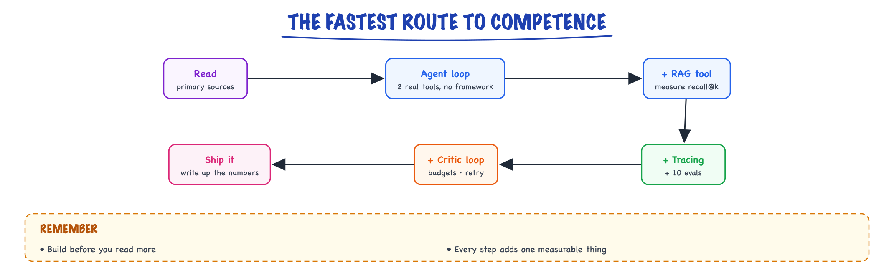
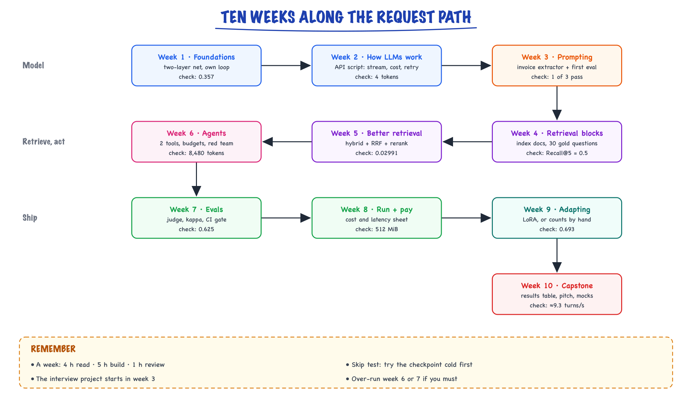

Learning path // Start here
What to read first, and the builds that teach the most.
01 — At a glance

Read the few primary sources, then build one agent and grow it step by step. One shipped, traced, evaluated agent teaches more than ten courses.
02 — New words
| Word | Meaning |
|---|---|
| Checkpoint | A small exercise at the end of each week whose answer is a number or a working artifact you can check. If you cannot do it, the week is not done. |
| Retrieval practice | Recalling or re-deriving something without looking. Much better for retention than re-reading. |
| Build-measure loop | Building a small thing, measuring it on a fixed set of inputs, changing one thing, measuring again. The habit the whole course is trying to form. |
| Results table | The table a build produces: variants as rows, metrics as columns, with the number of test cases. |
| Readiness test | A concrete, timed task that shows you can perform in an interview round, as opposed to feeling that you understand. |
| Mock interview | A timed practice round with someone playing the interviewer and scoring against a rubric. |
| Spaced review | Returning to earlier material after a gap (a week, then a few weeks) to keep it. |
| Critical path | The topics that later topics depend on. Skipping them makes everything after harder to understand. |
The lesson
03 — The question
This course has about seventy topic pages. Read in page order without a plan, most people stall in the foundations, or skim everything and retain little. The questions a plan must answer:
- In what order should the topics be learned, given what depends on what?
- How much time does it take, and what does each week produce?
- How do you know a week is actually learned, not just read?
- How do you know you are ready to interview?
The running example is a concrete learner: an engineer with several years of backend experience, comfortable with Python and system design, new to building with LLMs, with about 10 hours a week for 10 weeks (100 hours) before interviews. Each week below names the pages to work through, what to build, and a checkpoint with a checkable answer. A compressed 4-week version for a closer deadline follows. Reading lists and build ideas from outside the course are on this page below the lesson.
04 — Step 1: the order follows the request path
Topics depend on each other along the path of a single request, described in the big picture: text becomes tokens, a model scores next tokens, a sampler picks one, retrieval supplies evidence, tools let it act, evals measure it, serving runs it. You cannot reason about RAG quality without knowing what a model does with its context, or about agent cost without knowing that every call re-reads the conversation. So the plan goes foundations, model, prompting, retrieval, agents, production, inference, adaptation, then the capstone build and interview practice.
Two exceptions to strict order. First, every week has a small build, and the project you will carry into interviews starts in week 3 (the extractor and its first eval, which grows into the week-4 and week-5 assistant), before you feel ready: building is where questions come from, and questions make reading stick. Second, adaptation (fine-tuning, RLHF, DPO) comes late even though it is about how models are made, because interviews for application-focused AI engineering roles weight it less than retrieval, agents and evaluation.

The plan follows one request through the system, and every week ends with a build and a checkpoint that has a checkable answer.
05 — Step 2: how a week is spent
Ten hours a week, split roughly:
- 4 hours reading the week's pages, the lesson at the top of each first, then the reference parts below it.
- 5 hours building the week's piece and doing the checkpoint without looking at the page.
- 1 hour review: re-derive last week's checkpoint from memory, and write a five-line summary of this week in your own words.
Building gets the largest share because it produces the kind of knowledge interviews test: the number you measured, the thing that broke. The review hour is spaced retrieval practice: recalling last week's material after a gap is what moves it into long-term memory, and it is cheap.
Each topic page has the same shape, and reading it in the right order saves time. Read the lesson at the top straight through. Answer its "Check yourself" questions before opening the answers; the ones you miss tell you which step to reread. Then use the reference parts below it ("Quick reference", "The full explanation", "In production") selectively, for the subtopics your build needs that week. Reading every reference section in full is how a 10-hour week becomes 20.
Skip test. Before starting a week, try its checkpoint cold, with no reading. If you get the number and can explain it in two sentences, skim that week's lessons in an hour and give the time to the build or to a later week. For the learner in our example, with years of backend work, weeks 1 and 3 often pass partly cold; weeks 4 to 7 rarely do.
06 — Step 3: weeks 1 to 3, the model and how to talk to it
Week 1: foundations. The big picture, glossary, the math you need, classical ML, neural networks, PyTorch. Skim what you already know; slow down on softmax, cross-entropy and gradient descent, which recur everywhere. Build: train a two-layer network on a small dataset with a hand-written training loop. Checkpoint: the cross-entropy loss when the model gives the correct class probability 0.7 (answer 0.357), and explain why it falls as that probability rises.
Week 2: how LLMs work. What an LLM is, transformers, tokens, context and cost, how LLMs are trained, decoding, limits, calling a model. Build: a script that calls a model API, streams the answer, logs token counts and cost, and handles errors with retries. Checkpoint: for logits [4.0, 2.6, 2.2, 1.6, 1.0, 0.6, −1.0] at temperature 1, how many tokens are in the top-p 0.9 nucleus? (4.)
Week 3: prompting and structured output. Prompt anatomy, techniques, structured output, pitfalls. Build: an extractor that turns 20 messy invoice emails into JSON with a schema, plus your first eval: exact-match accuracy per field over the 20. Checkpoint: given three model outputs (one valid JSON with both fields, one missing a field, one plain text), how many pass the schema? (1.) Then: what decoding settings would you use and why?
07 — Step 4: weeks 4 and 5, retrieval
Week 4: the retrieval building blocks. Embeddings, embedding models, vector search, chunking, document ingestion. Build: ingest a documentation set you know well, chunk it by section with heading trails, embed it, store it (start with pgvector or Chroma), and write 30 questions with labelled gold chunks, including 3 unanswerable. Checkpoint: two gold chunks retrieved at ranks 4 and 9: what is Recall@5? (0.5.) Report your baseline Recall@5.
Week 5: making retrieval good. Hybrid search, reranking, the RAG pipeline, RAG in production, GraphRAG, and skim the stores you did not use: Pinecone, Weaviate. Build: add full-text search, fuse with RRF, rerank, and produce the ablation table (one change per row). Then add grounded generation with citations and abstention. Checkpoint: RRF score with \(c = 60\) for a chunk ranked 14th in one list and 1st in the other (0.02991), and explain why a reranker cannot fix a chunk missing from the candidate pool.
08 — Step 5: week 6, agents
What an agent is, the agent loop, tool calling, memory and context, reasoning, MCP, multi-agent systems; then skim frameworks, LangChain, LangGraph and CrewAI to know what they offer.
Build: add an agent mode to your week-5 assistant with two tools (search_docs, get_section), written without a framework: step, token and time budgets, repeated-call detection, errors returned as data, and three red-team cases (an injected instruction inside a document among them). Log every step. Checkpoint: with a 1,550-token prefix and 380 tokens added per step, how many input tokens do 4 model calls read? (8,480.) Explain why cost grows faster than the step count.
This is the week most worth over-running. If you need an extra week anywhere, take it here or in week 7.
09 — Step 6: weeks 7 and 8, production and inference
Week 7: proving it works. Evals, eval metrics, observability, reliability, security, semantic cache. Build: grow your question set to 60 or more, add an LLM judge, label 40 answers yourself and compute the judge's agreement and kappa, then wire the suite into CI with a gate. Checkpoint: humans pass 40 of 50 answers; the judge agrees on 37 passes and 7 fails. What is kappa? (0.625.) Is the judge admissible at a 0.7 bar?
Week 8: running it and paying for it. Cost and performance, MLOps and drift, reference architectures, hybrid patterns, inference internals, serving, mixture of experts, model compression, GPUs at scale. Build: a cost-and-latency sheet for your assistant (tokens per hop, cost per question, p95 per hop), and one change that improves it, measured. Checkpoint: KV cache for a model with 32 layers, 8 KV heads of dimension 128 in bf16, for 4,096 tokens (512 MiB), and why decoding is memory-bound.
10 — Step 7: weeks 9 and 10, adaptation and the capstone
Week 9: adapting models. Fine-tuning, RLHF, DPO, constitutional AI, and skim multimodal and voice agents. Build, if you have GPU access: a small LoRA or QLoRA fine-tune on a narrow task with a before-and-after table; otherwise, compute LoRA parameter counts and memory for a 7B model by hand. Checkpoint: the DPO loss on the very first training step (\(\log 2 \approx 0.693\)) and why. Be able to say in one minute when you would fine-tune and when you would not.
Week 10: the capstone and the interview. Build spec, knowledge layer, agent, ship, answer kit, portfolio projects, what interviews test. Build: write your own project's results table and two-minute pitch; do two timed mock system designs out loud. Checkpoint: estimate a support assistant with 2 million conversations a month, 4 turns each, peak 3× the average: turns per second at peak (about 9.3), then tokens per minute and monthly cost.
11 — Step 8: the compressed four-week version
If interviews are four weeks away and you can give 15 hours a week (60 hours), keep what interviews weight most and cut the rest to skims:
| Week | Focus | Pages | Produces |
|---|---|---|---|
| 1 | Model and prompting | big picture, tokens, transformers (lesson only), decoding, API, structured output | a working API script with cost logging |
| 2 | Retrieval | embeddings, chunking, hybrid search, reranking, RAG pipeline, pgvector | an assistant with an ablation table |
| 3 | Agents and evals | agent loop, tool calling, evals, eval metrics, security | agent mode with budgets; CI eval gate with a calibrated judge |
| 4 | Production and interview | cost and performance, inference internals, the four build pages, answer kit, interviews | cost sheet, pitch, two mock designs |
What you give up: foundations depth, adaptation, and the tool comparisons. Say so honestly if asked; "I've focused on application-layer systems and would ramp on fine-tuning" is a fine answer for most AI engineering roles.
12 — Step 9: when you fall behind or get stuck
Plans slip. Decide in advance what gives way, so a bad week does not become a lost month:
- Protect the build over the reading. If a week has only 5 hours, do the checkpoint and the smallest version of the build, and skim the pages. Unread pages can be read later; a missing results table cannot be invented before an interview.
- Stuck on a concept for more than an hour: go one stage back. Confusion about reranking is often confusion about embeddings; confusion about agent cost is usually about what the model sees on each call (memory and context). The dependency order in Step 1 tells you where to look.
- Stuck on a build for more than an evening: shrink it. Ten questions instead of thirty, one tool instead of two, a local file instead of a database. A small measured thing beats a large unfinished one.
- Two weeks behind: switch to the compressed plan from Step 8 for the remaining time rather than rushing every week.
Keep a short log: date, hours, checkpoint result, one sentence on what broke. It shows where time actually goes, and the "what broke" lines become your interview stories.
13 — Step 10: how to know you are ready
Feeling ready is not evidence. These timed tests are. You are ready when you can do all of them without notes:
- Follow one request through every hop of the big picture in five minutes, with a number at each hop.
- Do the week-10 estimate (requests per second, tokens per minute, cost per month) in five minutes.
- Answer each answer-kit question in about 90 seconds in claim, mechanism, trade-off, example form, using your own project's numbers.
- Present your project's results table in two minutes and survive ten minutes of "why?" from a friend.
- Complete a 45-minute mock system design that a peer scores "yes" on requirements, estimation, design, evaluation and trade-offs.
- Run the checkpoint script below and re-derive each answer on paper.
If one test fails, it points at the week to revisit, which is the point of having them.
14 — In code: every weekly checkpoint, self-checking
Each line re-derives one week's checkpoint. Try each on paper first, then run it.
import math import numpy as np def check(week, got, want, tol=1e-3): ok = abs(got - want) <= tol print("week %-2s %-34s got %-10.4g want %-10.4g %s" % (week, CHECKS[week], got, want, "PASS" if ok else "FAIL")) CHECKS = {1: "cross-entropy of p=0.7 on the label", 2: "top-p 0.9 nucleus size", 3: "extraction outputs passing schema", 4: "Recall@5 with gold at rank 4 and 9", 5: "RRF score, ranks 14 and 1", 6: "agent input tokens, 4 calls", 7: "Cohen's kappa", 8: "KV cache MiB, 4K tokens", 9: "DPO loss at step 0", 10: "peak turns per second"} # week 1: cross-entropy is -log of the probability given to the right answer check(1, -math.log(0.7), 0.3567) # week 2: nucleus size for logits [4.0, 2.6, 2.2, 1.6, 1.0, 0.6, -1.0] at T=1, p=0.9 z = np.array([4.0, 2.6, 2.2, 1.6, 1.0, 0.6, -1.0]) p = np.sort(np.exp(z) / np.exp(z).sum())[::-1] check(2, int(np.searchsorted(np.cumsum(p), 0.9) + 1), 4) # week 3: model outputs for an invoice extraction; schema needs total (number) and due import json outputs = ['{"total": 120.5, "due": "2026-01-31"}', '{"total": 120.5}', 'Total: 120.5'] def valid(text): try: d = json.loads(text) except ValueError: return False return isinstance(d.get("total"), (int, float)) and isinstance(d.get("due"), str) check(3, sum(map(valid, outputs)), 1) # week 4: two gold chunks, retrieved at ranks 4 and 9 retrieved = ["c%d" % i for i in range(1, 11)] check(4, len({"c4", "c9"} & set(retrieved[:5])) / 2, 0.5) # week 5: reciprocal rank fusion with c = 60 check(5, 1 / (60 + 14) + 1 / (60 + 1), 0.02991, tol=1e-5) # week 6: 1,550-token prefix, +380 tokens per step, 4 model calls check(6, sum(1550 + 380 * k for k in range(4)), 8480) # week 7: humans pass 40 of 50; judge agrees on 37 passes and 7 fails po, pe = 44 / 50, 0.8 * 0.8 + 0.2 * 0.2 check(7, (po - pe) / (1 - pe), 0.625) # week 8: 32 layers, 8 KV heads, head dim 128, bf16, 4,096 tokens check(8, 2 * 32 * 8 * 128 * 2 * 4096 / 2**20, 512) # week 9: policy equals reference, so the margin is 0 and the loss is log 2 check(9, -math.log(1 / (1 + math.exp(-0.0))), math.log(2)) # week 10: 2M conversations a month, 4 turns each, peak 3x the average check(10, 3 * 2_000_000 / 30 / 86_400 * 4, 9.259)
It prints one PASS line for each of weeks 1 to 10: 0.3567, 4, 1, 0.5, 0.02991, 8,480, 0.625, 512, 0.6931 and 9.259.
More detail
15 — Read: primary sources first
- Anthropic — Building Effective Agents — the canonical pattern taxonomy; has code.
- Anthropic — Effective context engineering — the real production bottleneck.
- Cognition — Don’t Build Multi-Agents — context-sharing failure modes, from the field.
- Anthropic — Multi-agent research system — the counter-case: when multi-agent wins.
- Karpathy — Intro to LLMs / Zero to Hero — demystify the model; build a tiny GPT.
- Hamel Husain — Your AI Product Needs Evals — how to actually evaluate.
- Chip Huyen — AI Engineering (book) — ties the whole stack together.
16 — Build: where the real learning is
- Build The agent loop with 2 real tools — no framework — internalize tool_use/tool_result.
- Add a RAG tool (chunk→embed→vector DB→rerank) — measure recall@k separately.
- Add tracing (Langfuse) + 10 assertion evals — make non-determinism visible.
- Add a critic loop + budgets + retry/backoff — demo → product.
- Port it to LangGraph or the OpenAI Agents SDK — now the abstractions make sense.
- Ship it; turn every failure into a new eval — quality compounds.
The fastest route to competence
Implement The agent loop with 2 real tools → add a RAG tool → add tracing + 10 evals → add a critic loop + budgets + retry. One shipped, traced, evaluated agent teaches more than ten courses.In production
17 — Where people get lost
- "Read everything first, build later." Reading without building fades within weeks. Build something every week from week 1, and start the project you will present by week 3.
- "Spend a month on foundations to be thorough." Foundations matter, but most AI engineering interviews weight retrieval, agents, evals and design more. Learn the critical parts and move on.
- "A week is done when the pages are read." It is done when the checkpoint is done from memory.
- "Use a framework from day one." Write the loop and the retrieval yourself first; frameworks make sense after you know what they hide.
- "Skip evals until the system works." You cannot know it works without them. Your first eval belongs in week 3.
- "Practise design by reading solutions." Design is a spoken, timed performance. Practise it out loud with a timer.
- "Cover every tool." One vector store and one framework understood deeply beat five skimmed.
18 — How this connects
Builds on
- The big picture — Two engines, four add-ons, one loop: the mental model everything else hangs on.
- What AI interviews test — What the eval and RAG/agent screening questions are really asking, and what a strong answer looks like.
- Glossary — Every term used across the map, one line each.